From design decisions to
enforced systems.
Infrastructure for design token governance across
frameworks and platforms.
Infrastructure for design token governance across
frameworks and platforms.
WHAT IS UNDERLITH?
Underlith separates design intent from implementation. Your tokens live in one place — versioned, publishable, consumed by every product your org builds.
When your stack changes, your decisions don't.
Underlith is not your source of truth. It's the infrastructure to build one.

WHY UNDERLITH EXISTS
Most teams rebuild their design system every time the stack changes —
not because the decisions were wrong, but because they were never separated from the implementation.
When design values live inside components, every team that ships independently creates a new version of the brand. Governance at the token layer is the only fix that scales.
Tailwind changes. React changes. Your brand shouldn't have to. @your-org/tokens is the layer that survives every migration.
Change a token once. Web, mobile, admin, AI agents — every product updates on the next npm update. No manual propagation. No divergence.
ARCHITECTURE
Token infrastructure beneath your stack. CLI tooling for zero-friction adoption.
Governance to make sure decisions stay decisions.
Your tokens live in one versioned, publishable file. Every product installs the package and inherits your brand decisions automatically.
Underlith brand init scaffolds your @org/tokens package in minutes. underlith init --shadcn maps an existing design system without touching a single component.
Lint rules, CI checks, and audit commands ensure tokens are actually used — and that no literal values slip through.

IMPLEMENTATION
Install the package once. From there, consume tokens exactly the way your stack expects —
no adapters, no plugins, no build-time magic required.
Import your brand package and use CSS custom properties directly. Works in any project — no framework needed.
Tailwind v4 reads CSS variables natively via @theme. Import your brand package and Tailwind utilities consume them automatically — no config file needed.
<button className="text-white" />
Reference your brand tokens inside Sass variables or mixins. Adopt without rewriting a single existing rule.
@mixin button-primary {
background: $color-text;
}
TWO PATHS
Whether you're starting from scratch or migrating an existing system, the destination is the same:
one package where your brand lives, versioned and shareable across every product.
Install the CLI, copy the starter tokens, scaffold your brand package, publish. Every product your org builds from here installs @your-org/tokens and inherits your design decisions automatically.
Copy tokens: underlith.tokens.css is your token source. Edit brand values before running brand init.
Brand init: Use your npm username as --org. The command prints the exact output path.
Publish once: @your-org/tokens becomes the shared source of truth. Every product inherits your brand automatically.
Already have a design system? Map your existing variables to Underlith tokens, extract your brand layer, publish. Components keep working exactly as before.
Integrate: underlith init --shadcn maps every existing variable to an Underlith token. No component rewrites.
Brand init: Use your npm username as --org. The command prints the exact output path.
Publish once: @your-org/tokens becomes the shared source of truth. Every product inherits your brand automatically.
EARLY ADOPTERS
One governed token layer. Every platform. No divergence.